Analysis Overview
This report presents a comprehensive analysis of genomic variants at the scaffold level across different treatments and adaptations.
The analysis focuses on the distribution patterns of variants, identifying enriched scaffolds, and comparing patterns between treatments.
Analysis Summary
Total Treatments Analyzed: 7
Total Variants: 838
Total Unique Scaffolds: 9
Enriched Scaffolds Identified: 14
Key Findings
- WT-37 (Temperature-adapted wild type) has the highest number of variants (172)
- CAS (CAS gene with temperature adaptation) has the highest number of variants (168)
- STC (STC gene with low oxygen adaptation) has the highest number of variants (168)
- Scaffold JRIU01000072.1 shows 2.9x enrichment in the WT-37 treatment
- Scaffold JRIU01000072.1 shows 2.9x enrichment in the STC treatment
- Scaffold JRIU01000221.1 shows 2.9x enrichment in the STC treatment
- The most similar treatments in terms of scaffold variant patterns are CAS vs CAS-CTRL (correlation: 1.00)
Variant Distribution by Treatment
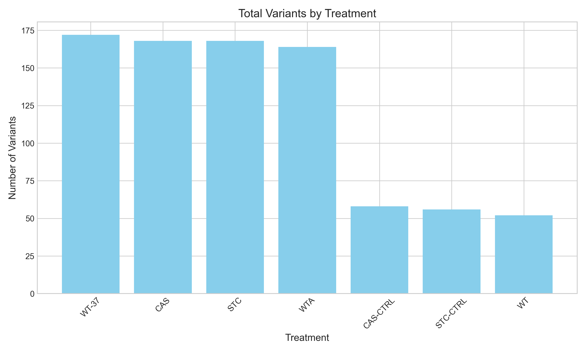
Variant Distribution by Adaptation

Shared Scaffolds Between Adaptations
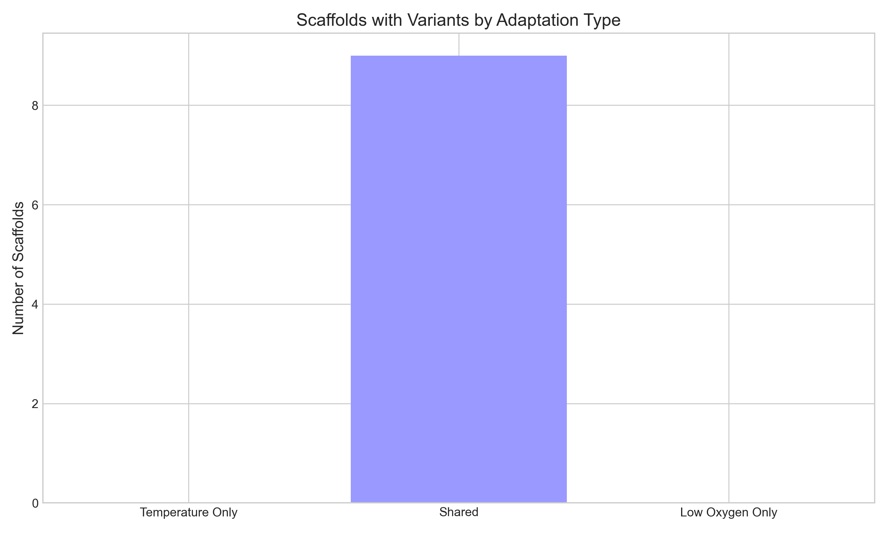
Treatment Analysis
This section shows the distribution of variants across different treatments and adaptations.
Treatment Statistics
| Treatment |
Description |
Adaptation |
Gene Modified |
Total Variants |
Scaffolds |
Global Density |
| WT-37 |
Temperature-adapted wild type |
Temperature |
No |
172 |
9 |
0.1625 |
| CAS |
CAS gene with temperature adaptation |
Temperature |
Yes |
168 |
8 |
0.1779 |
| STC |
STC gene with low oxygen adaptation |
Low Oxygen |
Yes |
168 |
9 |
0.1588 |
| WTA |
Low oxygen-adapted wild type |
Low Oxygen |
No |
164 |
8 |
0.1737 |
| CAS-CTRL |
CAS gene control |
None |
Yes |
58 |
8 |
0.0614 |
| STC-CTRL |
STC gene control |
None |
Yes |
56 |
8 |
0.0593 |
| WT |
Wild type control |
None |
No |
52 |
8 |
0.0551 |
Treatment Bubble Charts
These bubble charts show the top 20 scaffolds by variant density for each treatment.
The size of each bubble represents the number of variants, and the color represents the scaffold length.
CAS Treatment
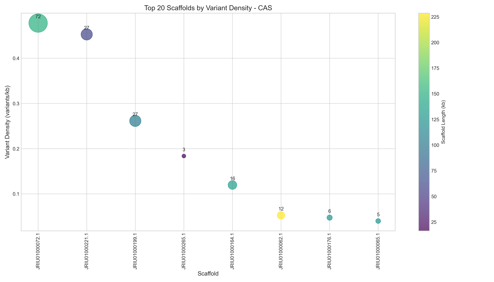
CAS-CTRL Treatment
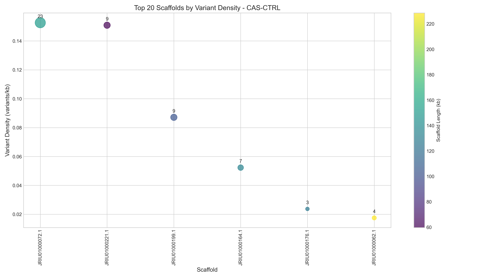
STC Treatment
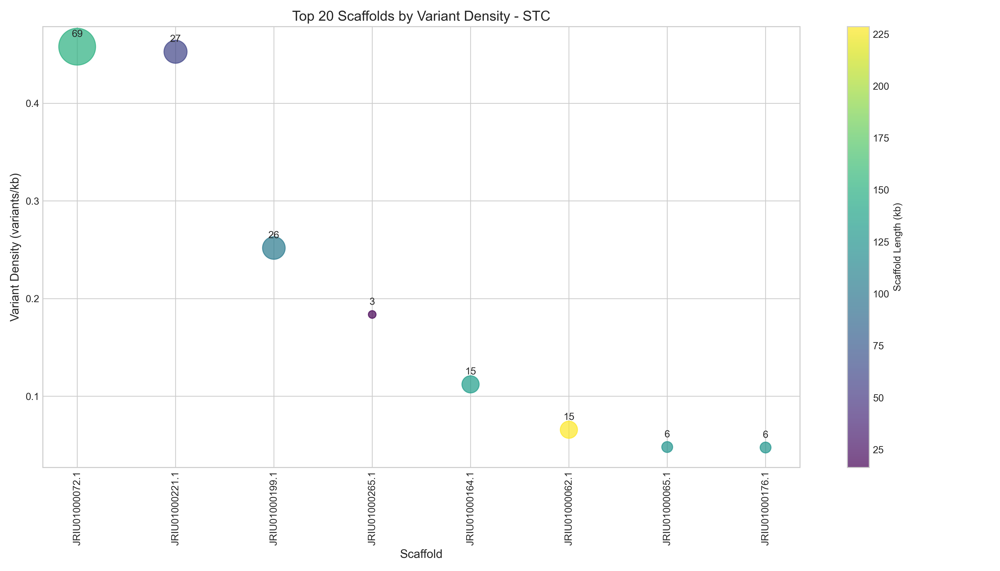
STC-CTRL Treatment
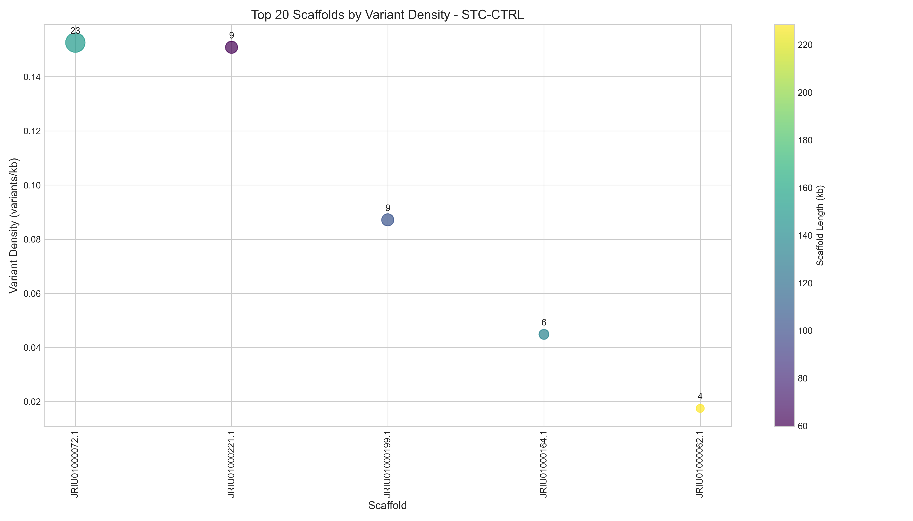
WT Treatment
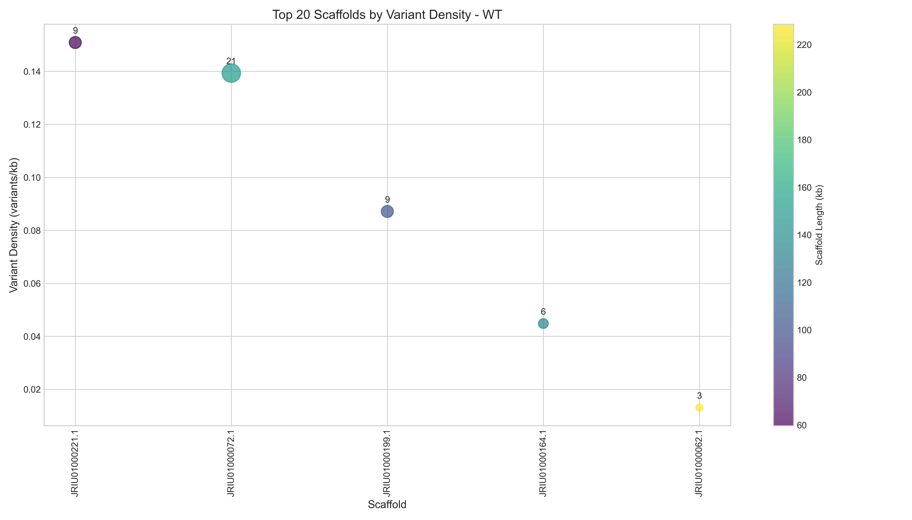
WT-37 Treatment
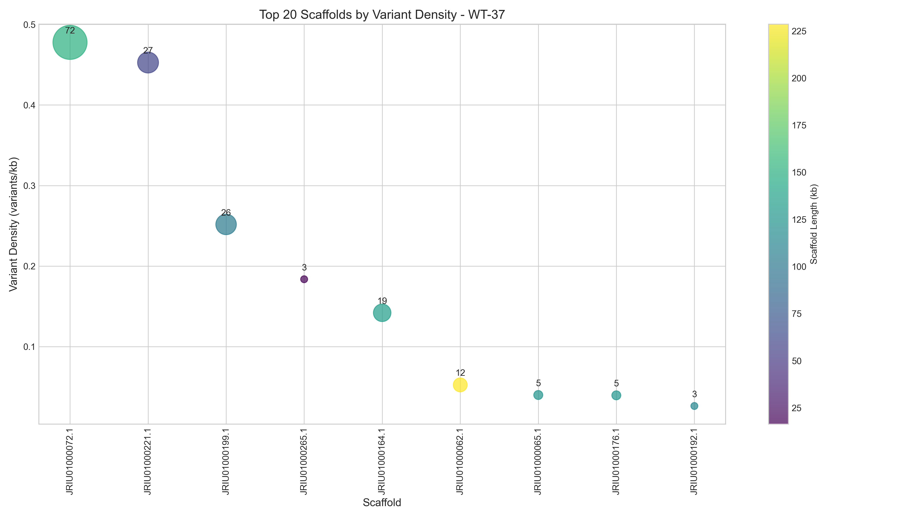
WTA Treatment
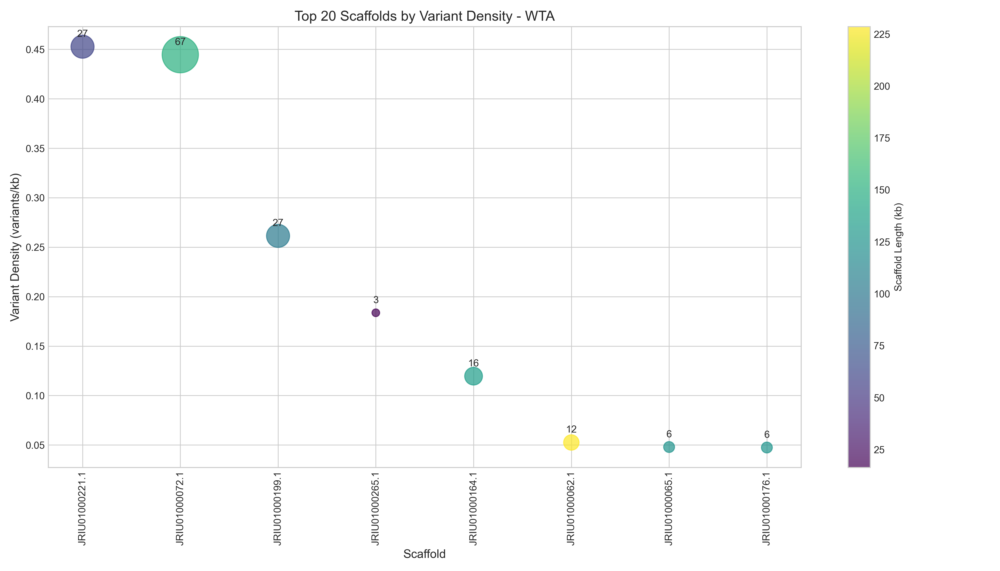
Scaffold Analysis
This section provides details on the distribution of variants across scaffolds.
Top Scaffolds by Variant Density
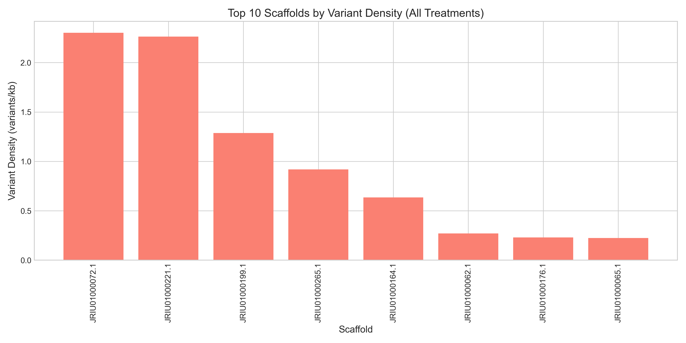
Clustered Heatmap of Scaffold Variant Densities
This heatmap shows the variant densities for the top 50 scaffolds across all treatments,
clustered to reveal patterns of similarity.
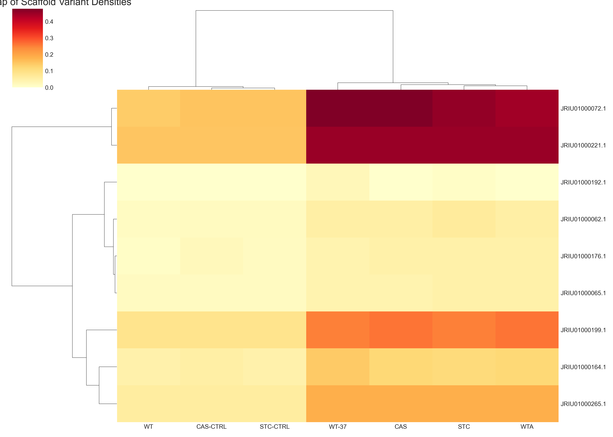
Scaffold Enrichment Analysis
This section shows statistical enrichment of variants on specific scaffolds.
Enrichment Heatmap
This heatmap shows the fold enrichment of the top enriched scaffolds across treatments.
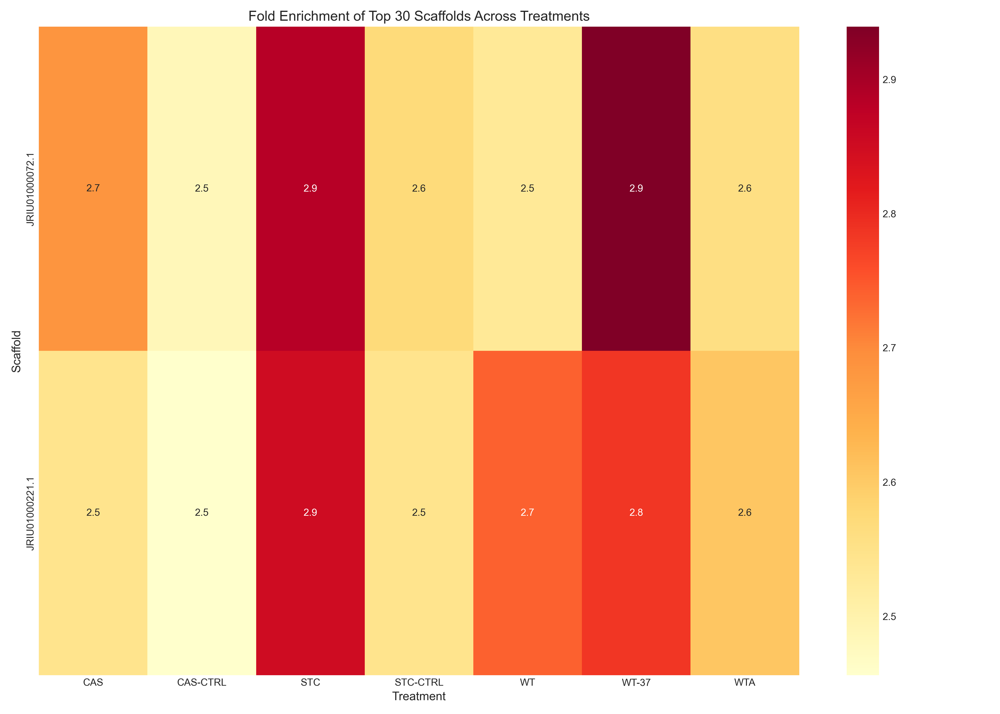
Top Enriched Scaffolds
| Treatment |
Scaffold |
Density |
Fold Enrichment |
P-Value |
| WT-37 |
JRIU01000072.1 |
0.4777 |
2.94x |
5.82e-15 |
| STC |
JRIU01000072.1 |
0.4578 |
2.88x |
4.99e-14 |
| STC |
JRIU01000221.1 |
0.4526 |
2.85x |
2.44e-06 |
| WT-37 |
JRIU01000221.1 |
0.4526 |
2.79x |
3.71e-06 |
| WT |
JRIU01000221.1 |
0.1509 |
2.74x |
6.72e-03 |
| CAS |
JRIU01000072.1 |
0.4777 |
2.68x |
4.07e-13 |
| WTA |
JRIU01000221.1 |
0.4526 |
2.61x |
1.19e-05 |
| STC-CTRL |
JRIU01000072.1 |
0.1526 |
2.57x |
6.06e-05 |
| WTA |
JRIU01000072.1 |
0.4446 |
2.56x |
1.91e-11 |
| CAS |
JRIU01000221.1 |
0.4526 |
2.54x |
1.80e-05 |
| STC-CTRL |
JRIU01000221.1 |
0.1509 |
2.54x |
1.05e-02 |
| WT |
JRIU01000072.1 |
0.1393 |
2.53x |
1.54e-04 |
| CAS-CTRL |
JRIU01000072.1 |
0.1526 |
2.48x |
1.01e-04 |
| CAS-CTRL |
JRIU01000221.1 |
0.1509 |
2.46x |
1.30e-02 |
Comparative Analysis
This section compares variant patterns between treatments and adaptations.
Treatment Correlation Heatmap
This heatmap shows the correlation of scaffold variant patterns between treatments.
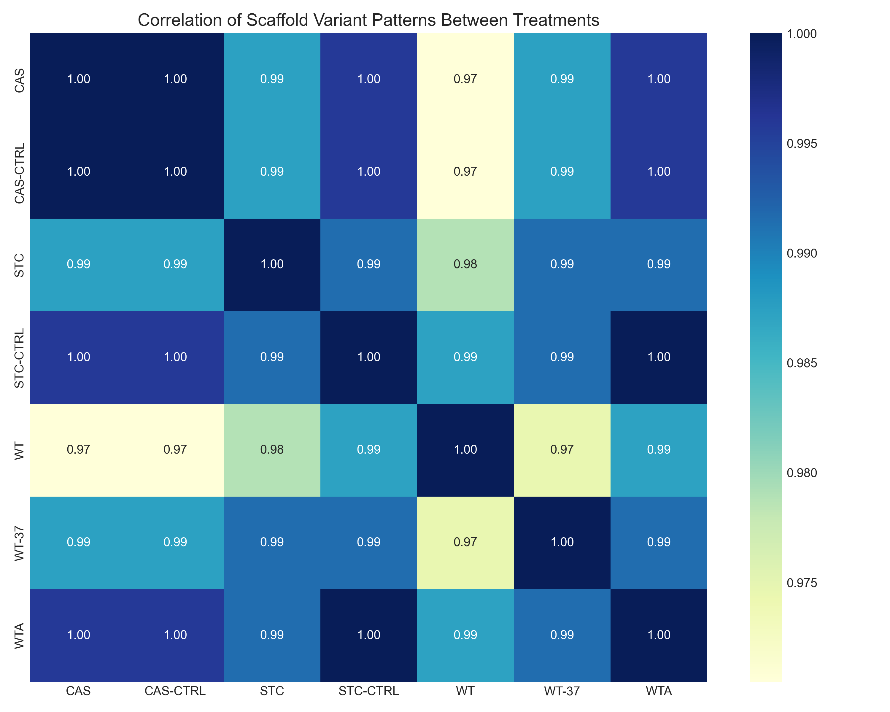
Top Treatment Correlations
| Treatment Pair |
Correlation |
| CAS vs CAS-CTRL |
1.0000 |
| STC-CTRL vs WTA |
1.0000 |
| CAS vs STC-CTRL |
0.9958 |
| CAS vs WTA |
0.9958 |
| CAS-CTRL vs STC-CTRL |
0.9958 |
| CAS-CTRL vs WTA |
0.9958 |
| STC vs STC-CTRL |
0.9915 |
| STC vs WT-37 |
0.9915 |
| STC vs WTA |
0.9915 |
| STC-CTRL vs WT-37 |
0.9915 |
Adaptation Comparison
Variant Counts
Scaffold Distribution